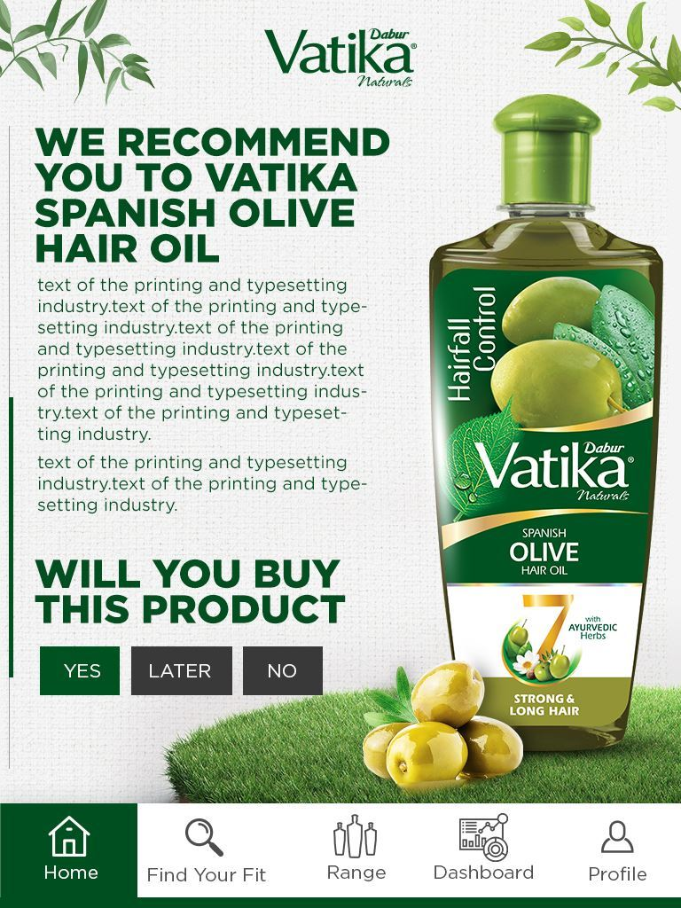
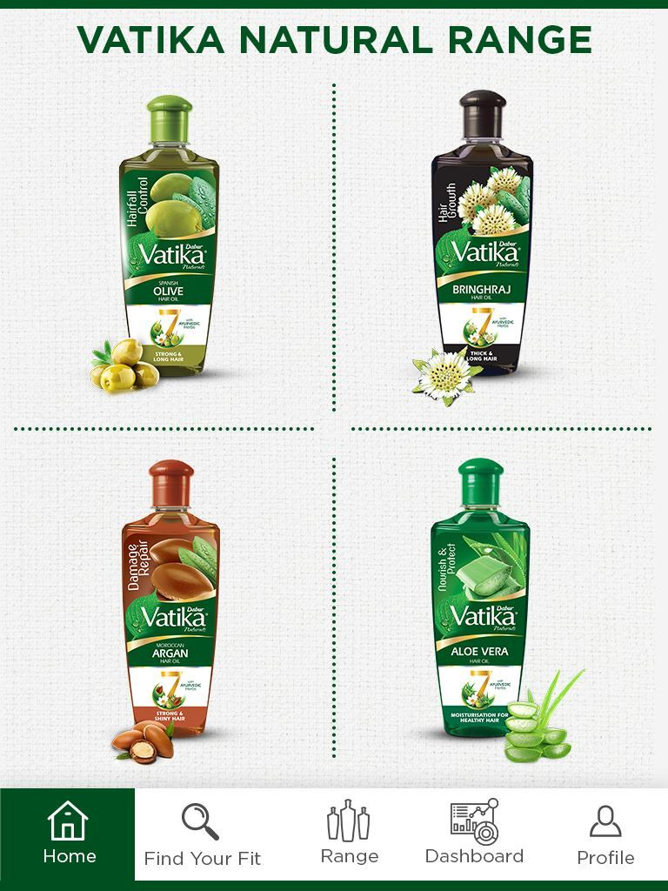

Choose the journey
Find a personalised fit or explore the complete natural range.
Vatika Naturals · Recommendation Application
A guided mobile experience that turns a diverse natural hair-oil range into a simple, relevant and confidence-building recommendation.
Project overview
Different hair needs demand different ingredient stories—but a broad range can make the first choice harder.
Vatika Recommends organises discovery around the user. A guided “Find Your Fit” journey connects individual needs to a relevant product, while range and dashboard views keep deeper exploration close.
The organising idea
Instead of asking users to decode every ingredient and benefit, the application translates their hair-care priorities into one clear next step.
The recommendation journey
Find a personalised fit or explore the complete natural range.

A focused result connects the user’s need to a relevant oil and ingredient story.
The complete family remains available for informed comparison and discovery.

Consistent product presentation makes the differences easy to scan.
The design challenge
Spanish Olive, Bhringraj, Moroccan Argan and Aloe Vera each needed a distinct role inside one coherent family.
Product detail, recommendation logic and range navigation had to remain effortless within a compact interface.
The product logic
Presented around hair-fall control and stronger, longer-looking hair.
Positioned for hair growth and thicker, longer-looking hair.
Connected to damage repair and stronger, shinier-looking hair.
Framed around nourishment, moisturisation and healthy-looking hair.
The outcome
The application turns natural ingredients and product differences into a guided decision—helping users move from uncertainty to a clear recommendation without losing the breadth of the range.
A needs-led route reduces the effort required to understand the portfolio.
Ingredient stories appear in the context of a user’s selected priority.
A clear recommendation creates a stronger bridge from exploration to intent.
Natural choice.Made personal.
Building a personalised product journey?